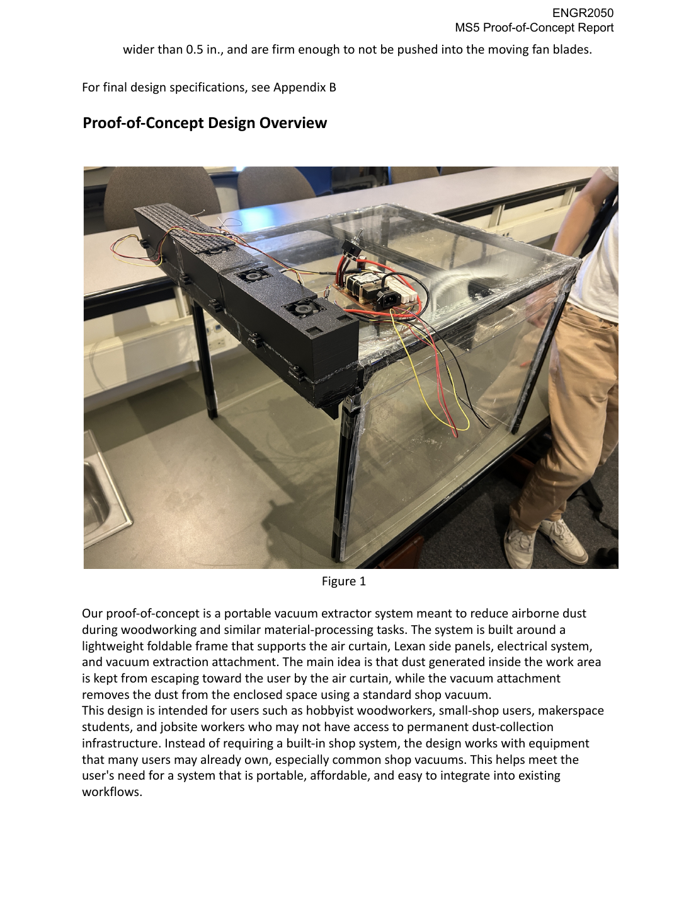

Portable Air-Curtain Dust Extraction System
Co-developed a proof-of-concept system to reduce airborne particulate exposure during woodworking and similar material-processing tasks. The prototype combined a foldable aluminum frame, Lexan panels, an air curtain, electrical components, and a 2.5-inch shop vacuum attachment.
- Created user questionnaires and conducted interviews to refine user needs.
- Calculated airflow CFM, nozzle length, baffle location, taper angles, and nozzle velocity.
- Helped connect safety, portability, affordability, and usability requirements.